07 — Selected Work
A social content system for a laser hair-removal clinic — soft neutrals, a hand-drawn monoline signature and a lot of air. The grid has to carry editorial photography, 3D product stills and pure-type posts without any of them looking borrowed from somewhere else.
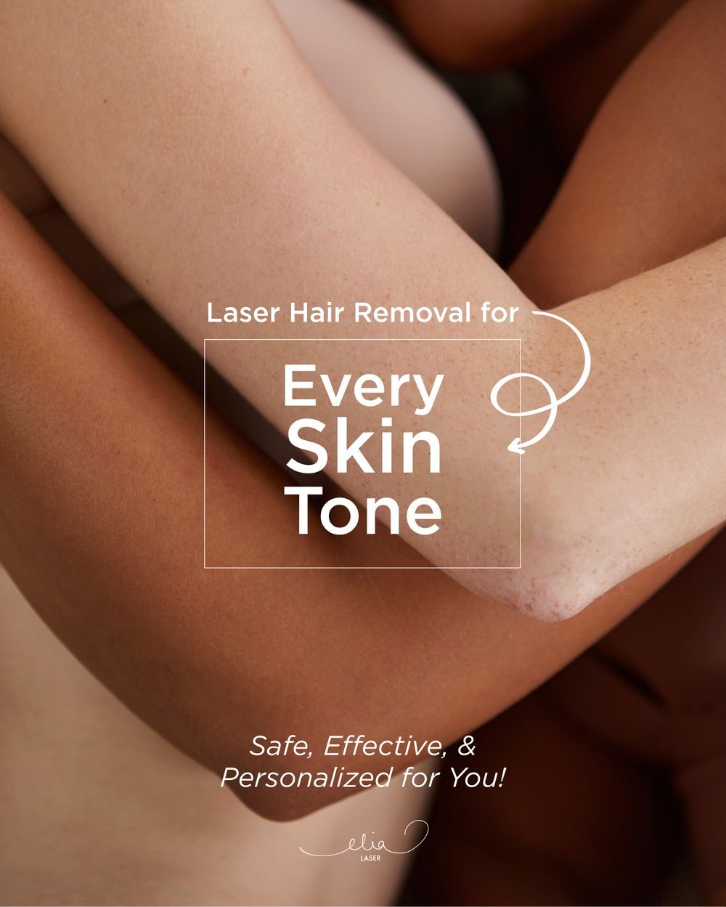
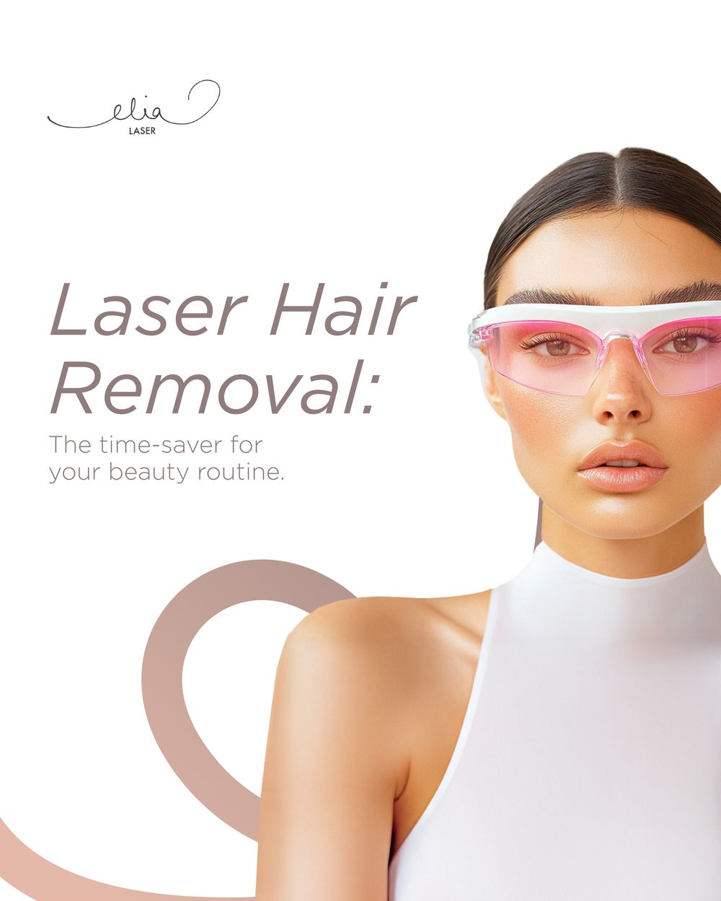
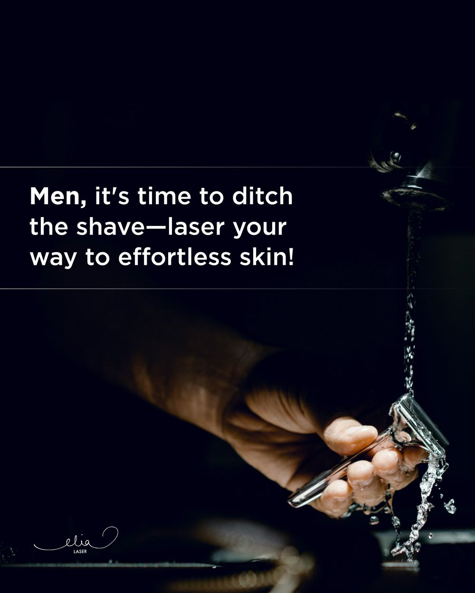
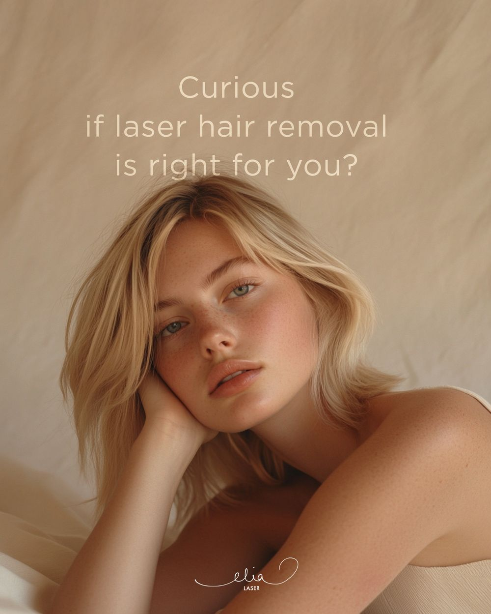
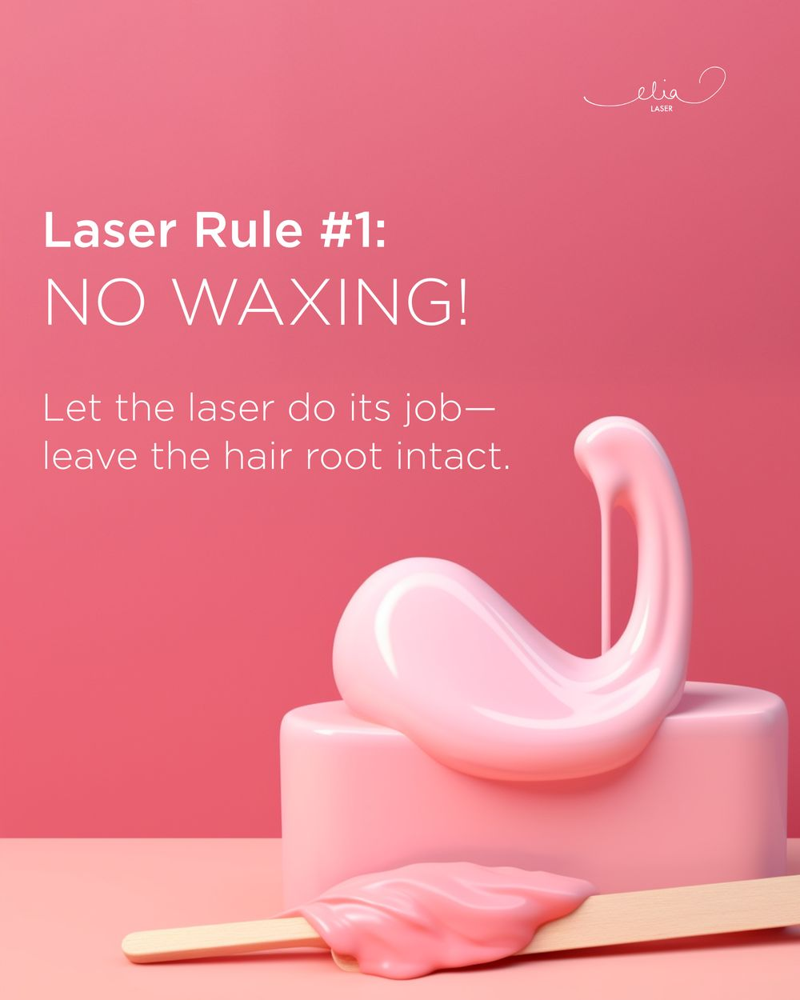
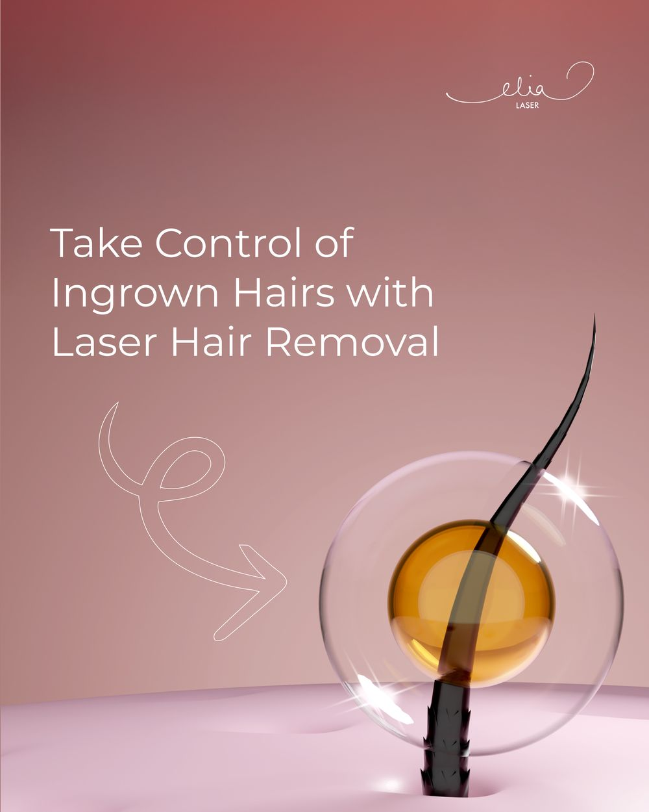
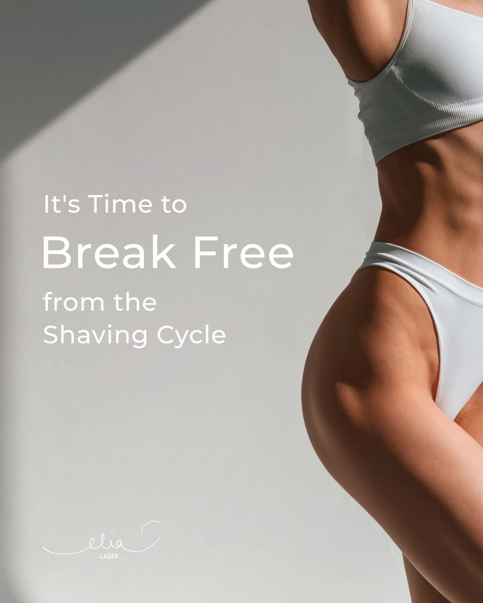
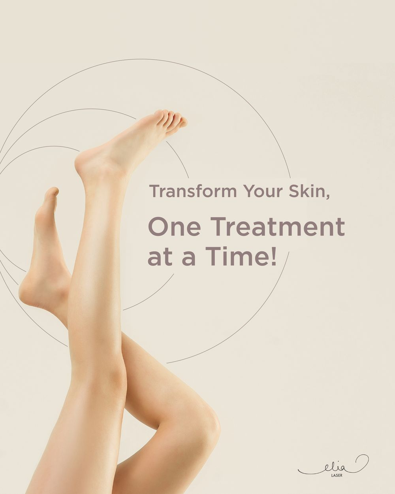
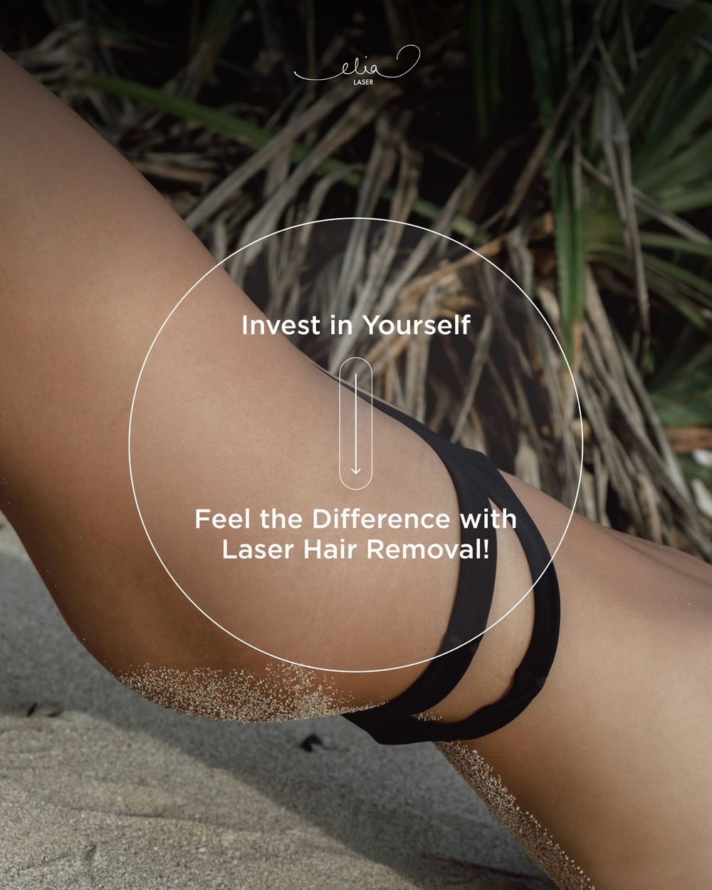
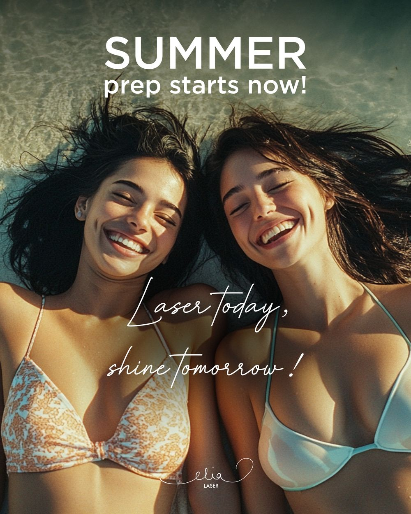
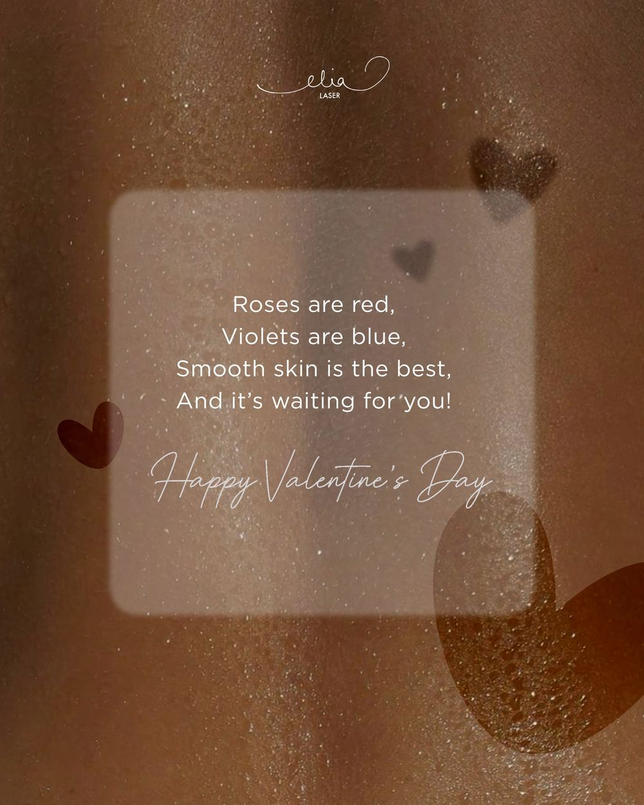
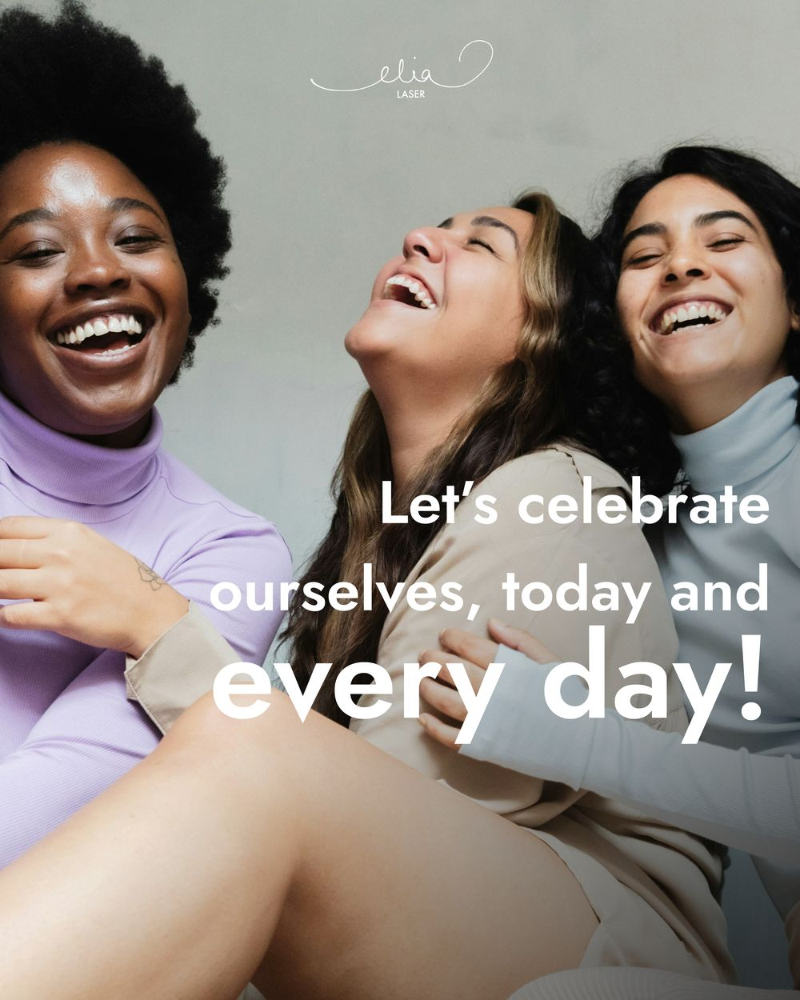
How it holds together
The monoline mark sits over stock editorial, studio portraits, 3D renders and flat colour. It's placed to the same optical margin every time, so the feed reads as one account rather than a folder of one-offs.
A light grotesque for statements, italic for warmth, script reserved for seasonal moments only. Restricting the script is what stops the whole thing tipping into a spa flyer.
Copy sits on the emptiest part of the frame, and where the photograph won't hold it, a frosted panel or an outlined box does — legibility solved without dropping a hard slab over the image.
Does it work on my skin tone. Can I still wax. What about ingrown hairs. Each post answers a real hesitation rather than restating the offer, which is what makes an educational feed worth following.
A darker, harder-edged post aimed at men sits inside the same system — different photography and weight, same mark and margins, so it extends the brand instead of splitting it.
Every post is 4:5 and alternates between image-led and colour-led, so three across never lands as three photographs in a row when the profile is viewed as a whole.